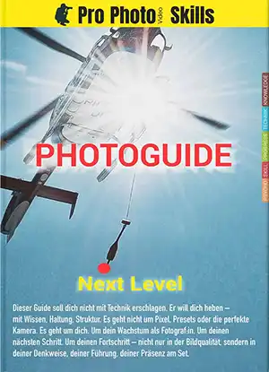

Steht für ein professionelles Weiterbildungssystem für Fotografen, das Strategie, Technik, Mentalität und unternehmerisches Denken verbindet – auf über A5 / 250 Seiten mit vielen Beispielen und Tipps.
Ebook · 230 € · EPUB / PDF · A5
Next Level ist kein klassisches Fotografie-Buch über Kameratechnik. Es ist eine strukturierte Weiterbildung für Fotografen, die ihr Handwerk, ihre Denkweise und ihre berufliche Entwicklung bewusst auf ein professionelles Niveau bringen wollen. Dieses Buch vereint fünf zentrale Bereiche professioneller Fotografie: KNOWLEDGE, TECHNIK, PROGRESS, SKILL und PSYCHO.
Im Bereich KNOWLEDGE entwickelst du ein tiefes Verständnis für Fotografie als Gesamtdisziplin – von Bildanalyse über visuelle Wahrnehmung bis hin zu strategischem Denken.
TECHNIK steht für sichere Entscheidungen am Set: Lichtführung, Workflow, Struktur und technische Klarheit. Technik ist hier kein Selbstzweck, sondern Werkzeug für professionelle Umsetzung.
PROGRESS beschäftigt sich mit deiner langfristigen Entwicklung als Fotograf. Positionierung, Wachstum und nachhaltiger Karriereaufbau stehen im Mittelpunkt.
SKILL vertieft deine praktischen Fähigkeiten: Führung, Kommunikation, Organisation und souveränes Auftreten am Set.
PSYCHO richtet den Blick auf mentale Stabilität, Drucksituationen und innere Klarheit – weil professionelle Fotografie immer auch Kopfsache ist.
Next Level verbindet diese Bereiche zu einem strukturierten Gesamtsystem für professionelle Fotografen.
Das ProPhotoSkills System im Überblick – MemberAbo, OnLocation, der kostenlose Beginner Guide und Next Level selbst.
Das professionelle Entwicklungssystem für Fotografen – KNOWLEDGE, TECHNIK, PROGRESS, SKILL und PSYCHO kompakt erklärt.